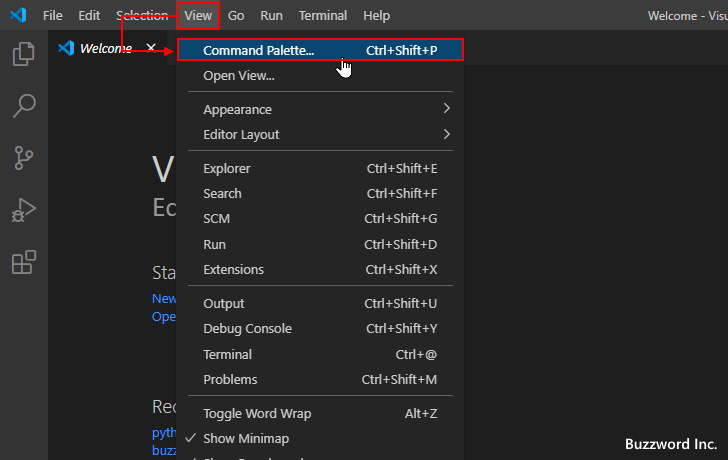
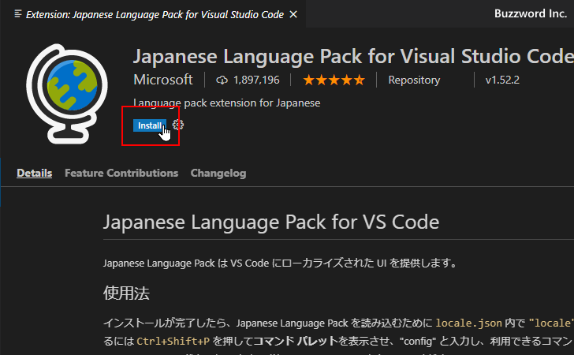
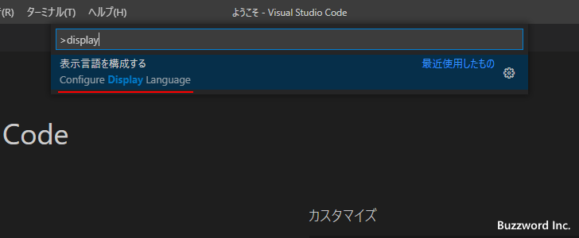

Visual Studio Codeを日本語化する
Visual Studio Code はデフォルトでメニューなどの表示言語が英語になっていますが拡張機能「Japanese Language Pack for Visual Studio Code」をインストールすることで日本語に変更することができます。ここでは Visual Studio Code の表示言語を日本語化する方法について解説します。
日本語化のための拡張機能をインストールする
Visual Studio Code を起動してください(起動方法については「Visual Studio Codeの起動と終了」を参照されてください)。
Ctrl + Shift + P を押すか、 「view」 メニューの中の 「Coomand Palette」 メニューをクリックしてください。

コマンドパレットが表示されます。
コマンドパレットで display と入力してください。すると Configure Display Language と表示されるのでクリックしてください。
表示言語の選択画面が表示されます。現在は使用可能な言語が英語のみなので en のみ表示されています。新しい言語をインストールするために Install additional langages をクリックしてください。
画面左側に言語を追加するための拡張機能の一覧が表示されます。この中から「Japanese Language Pack for Visual Studio Code」をクリックしてください。
「Japanese Language Pack for Visual Studio Code」の画面が表示されますので、「install」 をクリックしてください。

インストールが完了したら再起動を行います。完了後に画面右下に「Restart Now」と表示されるのでクリックしてください。
Visual Studio Code が再起動すると、自動的に新しくインストールした言語である日本語を使ってメニューなどが表示されます。
インストール済みの言語を切り替えて利用する
複数の言語が利用できるようになっているといつでも言語を切り替えて Visual Studio Code を利用することができます。言語を切り替えるには Ctrl + Shift + P を押すか、 「表示」 メニューの中の 「コマンドパレット」 メニューをクリックしてコマンドパレットを表示してください。
コマンドパレットで display と入力してください。すると「表示言語を構成する(Configure Display Language)」と表示されるのでクリックしてください。

表示言語の選択画面が表示されます。現在利用可能な言語である en と ja が表示されます。今回は en (英語) に切り替えてみます。「en」をクリックしてください。
表示言語の変更をするには Visual Studio Code の再起動が必要です。ダイアログが表示されますので「再起動」をクリックしてください。
Visual Studio Code の再起動が完了すると、先ほど選択した言語である英語を使ってメニューなどが表示されます。
コマンドプロンプトから起動するときに言語を指定する
コマンドプロンプトから Visual Studio Code を起動するとき、使用する言語を指定して起動することができます。例えば通常日本語で使っているけれど、言語を英語にして起動したい場合には次のようにコマンドプロンプトから実行します。(日本語を指定する場合は --locale=ja と指定します)。
code --locale=en

Visual Studio Code が起動し、オプションで指定した言語である英語を使ってメニューなどが表示されます。
なお恒久的な言語の変更ではないので、次回 Visual Studio Code を特に言語を指定せずに起動すると、元々使用するように設定されていた言語を使って起動します。
-- --
Visual Studio Code の表示言語を日本語化する方法について解説しました。
( Written by Tatsuo Ikura )

著者 / TATSUO IKURA
初心者～中級者の方を対象としたプログラミング方法や開発環境の構築の解説を行うサイトの運営を行っています。